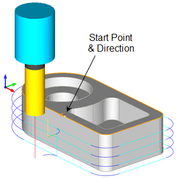
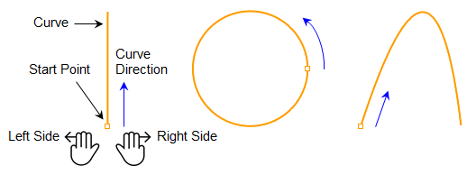
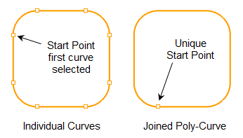
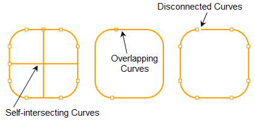

Our support staff speaks with users on a daily basis and new users have many questions. One of the questions asked often is:
How can I control the cut side and the cut start point of my 2 Axis toolpaths?
This article addresses this question is detail. To get many more of your questions answered be sure to get the Question & Answer Guide available for each of MecSoft's CAM desktop plug-ins. As an Annual Maintenance Subscription (AMS) subscriber, this guide and other training materials are available to you as part of your annual subscription. To learn more about AMS or to become an AMS subscriber just give us a call at (949) 654-8163 option 1 for Sales or contact sales@mecsoft.com today.
Each curve has a Start point, Direction and an End point. The Right Hand side of the curve is determined by the curve direction. These definitions are shown in the illustrations below. In 2 Axis machining methods the Cut Start Point is defined by the Start Point of the selected curve regions
So controlling the curve Start Point is critical in controlling the Cut Start Point of the 2 Axis toolpath.
To answer this question, we must first talk about curve geometry (i.e., line, arc or spline). Collectively we will call them curves. Each curve has a Start point, a Direction and an End point. If you position yourself at the start point and face the direction the curve is traveling, then your right and left hand will govern the right and left side of the curve. These definitions are shown in the illustration below. In 2-1/2 Axis machining methods the Cut Start Point is defined by the Start Point of the curve region. Thus, controlling the curve Start Point is critical in controlling the Cut Start Point of the toolpath. For closed curves, Inside and Outside can be used to control the side to cut. If the curve is a surface edge of a 3D solid model, you can also allow the program to determine the correct side to cut based on the part’s topology.  The Start Point, Direction and Cut Side of Curves Geometry |
When more than one disconnected curve is selected for one machining operation each is obviously treated as a separate curve region, each with a unique cut start point.
 |
If you get an "open loops found!" error message when generating an operation, this means that the machining regions you have selected are not joined when the operation is expecting them to be. 2-1/2 Axis Pocketing is one operation that expects closed curves. This is why it is always good practice to join closed curves into one poly-curve before being used in a machining operation. The following illustrates open loop conditions:  |
You can identify and display curve start point and direction arrow indicators using your CAD system tools and commands. 1.At the command prompt type the command crvseam and press <Enter>. 2.Select the curve to identity and press <Enter> again. 3.Start point and arrow indicators will appear..
|
You can use your CAD tools to move the Start Point of a curve. See the section above on How to Identify Start Points before continuing. 1.At the command prompt type the command crvseam and press <Enter>. 2.Select the curve to modify and press <Enter> again. Then select a point on the curve that you want to move the start point to..
|
In RhinoCAM you can use Pre-Defined Regions to control the Cut Start Point, Direction and other aspects of your machining regions. This is a convenient method because it works on both curves and surface edges. 1.
2.Select the Regions tab.
3.
4.Select the curves or surface edges that you want to create a pre-defined region from and then right-click or press <Enter>. The example below we select the top outer surface edge.
5.A Machining Region Set is created and added to the Machining Regions list with each curve/edge listed. In this example only one region is created. It is selected by default and the regions is displayed on the part with the start point and direction indicated.
6. 7.Now select a new start point anywhere along the pre-defined region. The start point will move to that location.
8. 9.Take a moment to familiarize yourself with the other cool Region commands on the toolbar and use them to save time and control your toolpaths. |
Once you have created a Pre-Defined Region with its Start Point defined you can use them as machining regions in any toolpath operation. 1.Create a toolpath operation as you normally would. 2.Select the Control Geometry tab. 3. Pick the Select Pre-Defined Regions button to display the dialog. 4.Select the region(s) for the toolpath operation and then pick OK to close the dialog. You can select one or more regions or a region set.
5.The Pre-Defined Region is added to the list of Selected Machining Region(s). It is listed as a Curve Region and can mixed with other curve or drive regions in the list.
6.Now Generate the toolpath as you normally would and the Start Point of the Pre-Defined Region controls the Cut Start Point of the 2 Axis toolpath. In this example, it is a Profiling toolpath.
7.NOTE: If you are generating a 2 Axis Profiling toolpath and your entry IS NOT being located at the curve start point, go to the Cut Parameters tab and make sure the option called Use Mid-Point of Longest Side is not checked. If it is, uncheck it and Generate the operation again.
|
Here is a list of the toolpaths that allow for Cut Start Point control. 1.All 2 Axis toolpath methods. 2.2 Axis Roughing and 2 Axis Pocketing have an additional Start Points sub-tab on the Control Geometry tab where you can define Cut Start Points. 3.3 Axis Horizontal Roughing and 3 Axis Horizontal Re-Roughing also have an additional Start Points sub-tab on the Control Geometry tab where you can define Cut Start Points. 4.Other 3 Axis methods have various parameters that control the toolpath so be sure to review all of the controls on the Cut Parameter tabs for each operation type. |